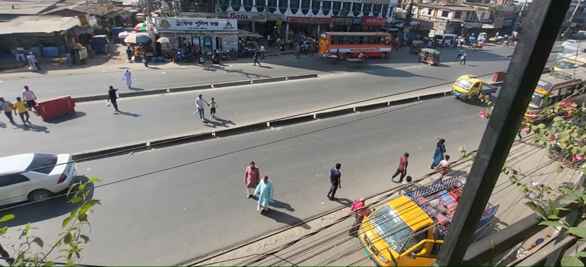

Noise Analysis of BCB Airport
Final group project for CEE 5614 (Air Transportation Systems) course at Virginia Tech. We looked at the noise contour (DNL) of BCB airport. Also, we looked at the impacted area and population exposure for different noise levels.

Identifying the Naturalistic Crossing Behaviors of Pedestrians
Final individual project for CEE 5604 (Traffic Flow and Characteristics) course at Virginia Tech. It's an observational study to understand the naturalistic crossing behaviors of pedestrians. Also, a model is estimated to support the observations.
A Study of Seatbelt Usage Behavior in Commercial Motor Vehicles Using Sensor Based Technology
Final individual proposal report for coursework. It's a research proposal focusing on monitoring and improving the seatbelt usage in commercial motor vehicles.